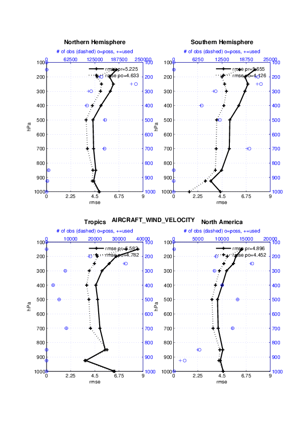
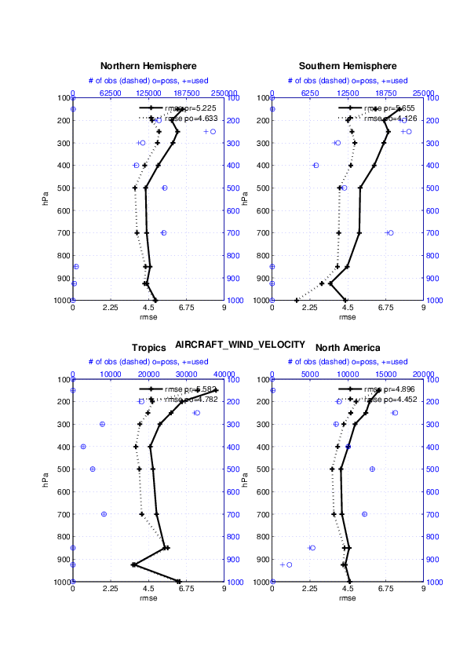

MODULES /
NAMELIST /
FILES /
USAGE /
REFERENCES /
ERRORS /
PLANS /
PRIVATE COMPONENTS /
TERMS OF USE
PROGRAM obs_diag
$Id$
Main program for evaluating filter performance in observation space.
There is also the ability to ingest an observation sequence file and
simply output the observation locations - more on that later.
Each obs_seq.final file contains an observation
sequence that has multiple 'copies' of the observation. One copy is
the actual observation, another copy is the estimate of the observation
from ensemble member 1, ... etc. If the original observation sequence
is the result of a 'perfect model' experiment, there is an additional
copy called the 'truth' - the noise-free expected observation given
the true model state. Since this copy does not, in general, exist for
the high-order models, all comparisons are made with the copy labelled
'observation'. It may, in some instances be useful to compare against
the 'truth', in which case you will have to hand-edit the code and
recompile. Caveat emptor.
The models "expected" observations are compared against the actual
observations in various ways.
Each ensemble member applies a forward operator to the state to compute
the "expected" value of an observation. Given multiple estimates of
the observation, several quantities can be calculated. It is possible to
compute the expected observations from the state vector before
assimilating (the "guess", "forecast", or "prior") or after the
assimilation (the "analysis", or "posterior").
 

There are two versions of this program, one for high-order models that have
real observations and another for low-order models. Since this program
is fundamentally interested in the response as a function of region, the
division was made if the model has a threed_sphere or a oned
location_mod.f90. It did not make sense to ask the
lorenz_96 model what part of North America you'd like
to investigate. The low-order models output simple text files instead of
netCDF files - the intent is to move these toward netCDF files in the near
future.
Identity observations (only possible from "perfect model experiments")
are already explored with state-space diagnostics,
so obs_diag simply skips them.
obs_diag is designed to explore the effect of
the assimilation in two ways 1) as a function of time for a particular
variable and level (this is the figure on the left) and 2) as a
time-averaged vertical profile (figure on the right).
These figures were created by a couple Matlab® scripts that query
the obs_diag_output.nc file:
DART/diagnostics/matlab/plot_evolution.m
and plot_profile.m. Each of these takes as input a
file name and a 'quantity' to plot ('rmse','spread','totalspread', ...)
and exhaustively plots the quantity (for every variable, every level,
every region) in a single matlab figure window - and creates a series
of .ps files with multiple pages for each of the figures.
The directory gets cluttered with them.
obs_diag
is not explicitly designed to take explore OSSE's. In general, it is
used for 'real' observations and looks through the metadata for
the observation sequence to identify which 'copy' is labeled 'observation'.
It is THAT copy that is used as the noisy estimate of the truth.
The observation sequence files contain only the time of the observation,
nothing of the assimilation interval, etc. - so it requires user guidance
to declare what sort of temporal binning for the temporal evolution
plots. I do a 'bunch' of arithmetic on the namelist times to convert
them to a series of temporal bin edges that are used when traversing
the observation sequence. The actual algorithm is that the user input for
the start date and bin width set up a sequence that ends in one of two ways ...
the last time is reached or the number of bins has been reached.
obs_diag reads obs_seq.final
files and calculates the following quantities for an arbitrary number of
regions and levels:
| rmse |
The root-mean-squared error (the horizontal wind components
are also used to calculate the vector wind velocity
and its RMS error). |
| bias |
The simple sum of forecast - observation. The bias of the
horizontal wind speed (not velocity) is also computed. |
| spread |
The standard deviation of the univariate obs.
DART does not exploit the bivariate nature of U,V winds
and so the spread of the horizontal wind is defined as
the sum of the spreads of the U and V components. |
| totalspread |
The total standard deviation of the estimate. We pool the
ensemble variance of the observation plus the observation error
variance and take the square root. |
| Nposs |
The number of observations available to be assimilated. |
| Nused |
The number of observations that were assimilated. |
The temporal evolution of the above quantities for every observation
type (RADIOSONDE_U_WIND_COMPONENT, AIRCRAFT_SPECIFIC_HUMIDITY, ...) is
recorded in the output netCDF file -
obs_diag_output.nc.
This netCDF file can then be loaded and displayed using the
Matlab® scripts in
..../DART/diagnostics/matlab.
(which may depend on functions in ..../DART/matlab).
The temporal, geographic, and vertical binning are under namelist
control.
Temporal averages of the above quantities are also stored in the netCDF
file. Normally, it is useful to skip the 'burn-in' period - the amount
of time to skip is under namelist control.
The 3D obs_diag has:
- an improved capacity for reading multiple
obs_seq.final files (that don't require an
arcane naming convention),
- a greatly expanded namelist control (including multiple, user-defined
levels),
- (one) netCDF output file obs_diag_output.nc
(instead of MANY impenetrable plain text files) -- complete with all
the metadata needed to make sensible, accurate graphics,
- removed the obs_select namelist variable,
- better reporting of the times/dates it encounters in the input files,
making it easier to set the namelist parameters
first_bin_center, last_bin_center,
- regions that can "wrap" in longitude,
- the ability to output a text file of the locations of the observations
to facilitate scatterplots of observation density by type and QC value,
- discontinued the rejection of observations based on the
rat_cri or input_qc_threshold
namelist variables (the counts of these are available in the
netCDF file as NbadQC and NbadIZ, respectively).
The Jamaica release of DART also implements a DART QC flag that provides
information about how the observation was or was not assimilated.
The DART QC flag is intended to provide information about whether the
observation was assimilated, evaluated only, whether the assimilation resulted
in a 'good' observation, etc. Here is the table that should explain things:
| DART QC flag value | meaning |
|---|
| 0 | observation assimilated |
| 1 | observation evaluated only |
| DART QC values higher than this means the prior and posterior are OK, but ... |
|---|
| 2 | assimilated, but the posterior forward operator failed |
| 3 | Evaluated only, but the posterior forward operator failed |
| DART QC values higher than this means only the prior is OK, but ... |
|---|
| 4 | prior forward operator failed |
| 5 | not used because of namelist control |
| DART QC values higher than this are bad news. |
|---|
| 6 | prior QC rejected |
| 7 | outlier rejected |
| 8+ | reserved for future use |
Optional namelist interface
&obs_diag_nml
may be read from file input.nml.
OTHER MODULES USED
obs_sequence_mod
obs_kind_mod
obs_def_mod (and possibly other obs_def_xxx mods)
assim_model_mod
random_seq_mod
random_nr_mod
model_mod
location_mod
types_mod
time_manager_mod
utilities_mod
sort_mod
NAMELIST
We adhere to the F90 standard of starting a namelist with an ampersand
'&' and terminating with a slash '/' for all our namelist input.
Consider yourself forewarned that filenames that contain a '/' must be
enclosed in quotes to prevent them from prematurely terminating the namelist.
The namelist declaration (i.e. what follows) has a different syntax, naturally.
namelist / obs_diag_nml /
obs_sequence_name, obs_sequence_list, first_bin_center, last_bin_center,
bin_separation, bin_width, time_to_skip, max_num_bins,
plevel, hlevel, mlevel, obs_select,
rat_cri, input_qc_threshold,
Nregions, lonlim1, lonlim2, latlim1, latlim2,
reg_names, print_mismatched_locs, print_obs_locations, verbose
This namelist is read in a file called input.nml.
The date-time integer arrays in this namelist have the form
(YYYY, MO, DA, HR, MIN, SEC).
The allowable ranges for the region boundaries are: latitude [-90.,90],
longitude [0.,Inf.]
You can only specify either
obs_sequence_name
or
obs_sequence_list -- not both.
One of them has to be an empty string ... i.e. ''.
| Contents |
Type |
Description |
|---|
| obs_sequence_name |
character |
Name of the observation sequence file(s).
This may be a relative or absolute filename. If the filename
contains a '/', the filename is considered to be comprised of
everything to the right, and a directory structure to the left.
The directory structure is then queried to see if it can be
incremented to handle a sequence of observation files.
The default behavior of obs_diag
is to look for additional files to include until the files
are exhausted or an obs_seq.final file
is found that contains observations beyond the timeframe of
interest.
e.g. 'obsdir_001/obs_seq.final' will cause
obs_diag to look for
'obsdir_002/obs_seq.final', and so on.
If this is set, 'obs_sequence_list' must be set to ''.
Default 'obs_seq.final' |
| obs_sequence_list |
character |
Name of an ascii text file which contains a list
of one or more observation sequence files, one per line.
If this is specified, 'obs_sequence_name' must be set to ''.
Can be created by any method, including sending the output
of the 'ls' command to a file, a text editor, or another program.
If this is set, 'obs_sequence_name' must be set to ''.
Default '' - an empty string. |
| first_bin_center |
integer, dimension(6) |
first timeslot of the first obs_seq.final file to process.
The six integers are: year, month, day, hour, hour, minute,
second -- in that order. obs_diag has
improved run-time output that reports the time and date of the
first and last observations in every observation sequence file.
Look for the string 'First observation date' in the logfile.
If the verbose is 'true', it is also
written to the screen.
Default: 2003, 1, 1, 0, 0, 0 |
| last_bin_center |
integer, dimension(6) |
last timeslot of interest.
(reminder: the last timeslot of day 1 is hour 0 of day 2)
The six integers are: year, month, day, hour, hour, minute,
second -- in that order. This does not need to be exact,
the values from first_bin_center and
bin_separation are used to populate the time
array and stop on or before the time defined by
last_bin_center.
See also max_num_bins.
Default: 2003, 1, 2, 0, 0, 0 |
| bin_separation |
integer, dimension(6) |
Time between bin centers.
The year and month values must be zero.
Default: 0, 0, 0, 6, 0, 0 |
| bin_width |
integer, dimension(6) |
Time span around bin centers in which obs will be
compared. The year and month values must be zero.
Frequently, but not required to be, the same as the values
for bin_separation.
Default: 0, 0, 0, 6, 0, 0 |
| time_to_skip |
integer, dimension(6) |
Time span at the beginning to skip when calculating
vertical profiles of rms error and bias. The year and month
values must be zero. Useful because it takes some
time for the assimilation to settle down from the climatological
spread at the start.
Default: 0, 0, 1, 0, 0, 0 |
| max_num_bins |
integer |
This provides an alternative way to declare the
last_bin_center.
If max_num_bins is set to '10', only
10 timesteps will be output - provided
last_bin_center is set to some later date.
Default: 1000000 |
| plevel |
integer, dimension(50) |
The midpoints defining the pressure levels for the
vertical binning. There is no specification of bin width - a
continuum is used. If a single midpoint value is entered, the
bin edges are +/- 10% of the midpoint value. If you'd like to
change that ... see the routine
Rmidpoints2edges().
Default: (1000, 925, 850, 700, 500, 400, 300,
250, 200, 150, 100) |
| hlevel |
integer, dimension(50) |
Same, but for observations that have height(m) as the
vertical coordinate.
Default: (1000, 2000, 3000, 4000, 5000, 6000,
7000, 8000, 9000, 10000, 11000) |
| mlevel |
integer, dimension(50) |
Same, but for observations on model level
(good luck getting them).
Default: (1, 2, 3, 4, 5, 6, 7, 8, 9, 10) |
| obs_select |
integer |
Which obs subset to use; all(1),
radiosonde only(2), everything but radiosondes(3).
Removed because all observations are independently processed.
|
| rat_cri |
real |
Ratio of 'distance' of the ensemble mean to the observation
in terms of the standard deviation of the ensemble and
observational error.
abs(prior_mean-obsval) / sqrt(prior_spread+obs_error_variance)
Since we generally don't have all the ensemble members (in the
obs_seq.final file) we cannot
calculate the covariance term that should be in the denominator,
so it is not really the normalized distance. If this ratio is
larger than rat_cri then the observation
is suspect and will be ignored will
simply be counted in NbadIZ.
A histogram of the ratios is saved in LargeInnov.txt, as are individual observations
that have a large ratio (i.e. the outliers)
Default: 5000.0 |
| input_qc_threshold |
real |
Observations with quality control values greater than this
will be excluded from the diagnostics
will be counted in NbadQC.
Default: 4.0 |
| Nregions |
integer |
Number of regions of the globe for which you'd like
obs space diagnostics. Must be between [1,50].
Default: 4 |
| lonlim1 |
real, dimension(50) |
Westernmost longitudes of each of the regions.
Default: 0.0, 0.0, 0.0, 235.0 |
| lonlim2 |
real, dimension(50) |
Easternmost longitudes of each of the regions.
If any of these values is less than
the westernmost values, it defines a region that spans the
prime meridian. No problem. It is perfectly acceptable
to specify lonlim1 = 330 , lonlim2 = 50 to identify a region
like "Africa".
Default: 360.0, 360.0, 360.0, 295.0 |
| latlim1 |
real, dimension(50) |
Southernmost latitudes of the regions.
Default: 20.0, -80.0, -20.0, 25.0 |
| latlim2 |
real, dimension(50) |
Northernmost latitudes of the regions.
Default: 80.0, -20.0, 20.0, 55.0 |
| reg_names |
character(len=129), dimension(50) |
Array of names for the regions to be analyzed.
Default: 'Northern Hemisphere','Southern Hemisphere',
'Tropics','North America' |
| print_mismatched_locs |
logical |
Print instances where U and V "pairs" don't have the
same location.
Default: .false. |
| print_obs_locations |
logical |
Create additional output files with the lat/lon
location of each observation, obs type, and QC value. These
files are named observation_locations.xxx.dat and may be
plotted with DART/diagnostics/matlab/plot_observation_locations.m.
There is one output file per temporal bin.
For pathological reasons, these files cannot exist prior to execution.
If they do, an error will result, and execution halts..
Default: .false. |
| verbose |
logical |
Print extra info about the obs_diag run.
Default: .false. |
FILES
- input.nml is used for
obs_diag_nml
- obs_diag_output.nc is the
netCDF output file
- the oned version of obs_diag outputs many
files of the form "OBS_TYPE_VARIABLE_diagnostic.dat" and one text file
obsDiagAtts.m containing the metadata
- dart_log.out list directed output
from the obs_diag.
- LargeInnov.txt contains the distance ratio
histogram -- useful for estimating rat_cri.
- observation_locations.xxx.dat contains the
locations for all the observation in temporal bin "xxx". These are
only created if the namelist variable
print_obs_locations is set to
.true.
Obs_diag may require a model input file from which to get grid information,
metadata, and links to modules providing the models expected observations.
It all depends on what's needed by the model_mod.f90
Discussion of obs_diag_output.nc variables
Every observation type encountered in the observation sequence file is
tracked separately, and aggregated into temporal and 3D spatial bins.
There are two main efforts to this program. One is to track the temporal
evolution of any of the quantities available in the netCDF file for any
possible observation type:
ncdump -v CopyMetaData,ObservationTypes obs_diag_output.nc
The other is to explore the vertical profile of a particular observation
kind. By default, each observation kind has a 'guess/prior' value and
an 'analysis/posterior' value - which shed some insight into the
innovations.
temporal evolution
The obs_diag_output.nc output file has all the
metadata I could think of, as well as separate variables for every
observation type in the observation sequence file. Furthermore, there
is a separate variable for the 'guess/prior' and 'analysis/posterior'
estimate of the observation. To distinguish between the two, a suffix
is appended to the variable name. An example seems appropriate:
...
char CopyMetaData(copy, stringlength) ;
CopyMetaData:long_name = "quantity names" ;
char ObservationTypes(obstypes, stringlength) ;
ObservationTypes:long_name = "DART observation types" ;
ObservationTypes:comment = "table relating integer to observation type string" ;
float RADIOSONDE_U_WIND_COMPONENT_guess(time, copy, plevel, region) ;
RADIOSONDE_U_WIND_COMPONENT_guess:_FillValue = -888888.f ;
RADIOSONDE_U_WIND_COMPONENT_guess:missing_value = -888888.f ;
float RADIOSONDE_V_WIND_COMPONENT_guess(time, copy, plevel, region) ;
RADIOSONDE_V_WIND_COMPONENT_guess:_FillValue = -888888.f ;
RADIOSONDE_V_WIND_COMPONENT_guess:missing_value = -888888.f ;
...
float MARINE_SFC_ALTIMETER_guess(time, copy, surface, region) ;
MARINE_SFC_ALTIMETER_guess:_FillValue = -888888.f ;
MARINE_SFC_ALTIMETER_guess:missing_value = -888888.f ;
...
float RADIOSONDE_WIND_VELOCITY_guess(time, copy, plevel, region) ;
RADIOSONDE_WIND_VELOCITY_guess:_FillValue = -888888.f ;
RADIOSONDE_WIND_VELOCITY_guess:missing_value = -888888.f ;
...
float RADIOSONDE_U_WIND_COMPONENT_analy(time, copy, plevel, region) ;
RADIOSONDE_U_WIND_COMPONENT_analy:_FillValue = -888888.f ;
RADIOSONDE_U_WIND_COMPONENT_analy:missing_value = -888888.f ;
float RADIOSONDE_V_WIND_COMPONENT_analy(time, copy, plevel, region) ;
RADIOSONDE_V_WIND_COMPONENT_analy:_FillValue = -888888.f ;
RADIOSONDE_V_WIND_COMPONENT_analy:missing_value = -888888.f ;
...
There are several things to note:
1) the 'WIND_VELOCITY' component is nowhere 'near' the corresponding U,V components.
2) all of the 'guess' variables come before the matching 'analy' variables.
3) surface variables (i.e. MARINE_SFC_ALTIMETER have a
coordinate called 'surface' as opposed to 'plevel' for the others in
this example).
vertical profiles
Believe it or not, there are another set of netCDF variables specifically
for the vertical profiles, essentially duplicating the previous
variables but without the 'time' dimension. These are
distinguished by the suffix added to the observation kind - 'VPguess'
and 'VPanaly' - 'VP' for Vertical Profile.
...
float SAT_WIND_VELOCITY_VPguess(copy, plevel, region) ;
SAT_WIND_VELOCITY_VPguess:_FillValue = -888888.f ;
SAT_WIND_VELOCITY_VPguess:missing_value = -888888.f ;
float RADIOSONDE_U_WIND_COMPONENT_VPanaly(copy, plevel, region) ;
RADIOSONDE_U_WIND_COMPONENT_VPanaly:_FillValue = -888888.f ;
RADIOSONDE_U_WIND_COMPONENT_VPanaly:missing_value = -888888.f ;
...
Observations flagged as 'surface' do not participate in the vertical
profiles (Because surface variables cannot exist on any other level,
there's not much to plot!). Observations on the lowest level DO
participate. There's a difference!
USAGE
Obs_diag is built in .../DART/models/your_model/work, in the same way
as the other DART components.
multiple observation sequence files
Perhaps the most user-friendly enhancement is the strategy for processing
a series of observation sequence files. Everything keys off the
obs_sequence_name namelist variable. Several examples
might be the most effective description.
| value | effect |
|---|
| "obs_seq.final" |
A single file is processed.
The file must exist in the current directory. |
| "/path_to/nirvana/obs_seq.final" |
A single file is processed.
The file must exist where you said it exists. |
| "../nirvana/obs_seq.final" |
A single file is processed.
Relative pathnames work just fine. |
| "/path_to/nirvana_001/obs_seq.final" |
A single file is processed, and more are expected.
Because the directory name contains an underscore ("_") and the
portion of the directory to the right of the (rightmost)
underscore can be incremented, obs_diag
will try to look for the next directory in the sequence, i.e.
"/path_to/nirvana_002/obs_seq.final". The tricky part is that
the number of digits in the directory numbering must remain
constant. Most (all?) of the DART scripts that produce these
directories have historically used a constant number of digits
so they alphabetically and numerically 'list' identically.
obs_diag will stop when it runs out
of files to ingest, or if it encounters an observation sequence
file whose first time is beyond the timeframe of interest. |
plotting locations
obs_diag does not plot your locations.
Since obs_diag already reads observation
sequences, it is a tiny extension to write out files that contain
rudimentary location information.
If you set the value of the namelist parameter
print_obs_locations to .true., you can create
output files (of the form
observation_locations.xxx.dat) which may then be plotted
with just about anything ... the first line of the file (they are
plain text, despite the .dat suffix) explains it all. One of the
columns in the output files is the observation type - which can
be decoded by using the key in obs_diag_output.nc -
specifically, try the unix command:
ncdump -v ObservationTypes obs_diag_output.nc
 |
The Matlab® script plot_observation_locations.m
automatically decodes the observation types and creates a legend.
It also allows plotting of observations with select QC values.
So, for example, you can plot the location of all the observations
that WERE NOT assimilated successfully.
Sometimes it is useful to plot observation sequence files that have
not yet been assimilated, so they have no ensemble estimates. The
rest of obs_diag is pretty useless, but
you can still output the observation locations. |
REFERENCES
- none
ERROR CODES and CONDITIONS
| Routine | Message | Comment |
|---|
| obs_diag |
No first observation in sequence. |
get_first_obs couldn't find a "first obs"
in the obs_seq.final. |
| obs_diag |
No last observation in sequence |
get_last_obs couldn't find a "last obs"
in the obs_seq.final |
| obs_diag |
metadata incomplete |
Couldn't find the index for the
observatoin value in the observation sequence file. It is the only
one that is required. |
| filter_get_obs_info |
Vertical coordinate not recognized |
It must be "surface", "pressure", or "height" |
| Convert2Time |
namelist parameter out-of-bounds. Fix and try again |
bin_width, bin_separation, and time_to_skip must have
year = 0 and month = 0 |
| ObsLocationsExist |
Cannot have pre-existing obs location
output files. Stopping. |
It is far easier to implement the
logic to output these files if they don't exist in the first place.
Remove anything/everything like "observation_locations.xxx.dat" from
the current directory and try again. |
KNOWN BUGS
none at this time
FUTURE PLANS
The RMSE of the vector wind velocity is being used.
The bias is actually the bias of the wind speed, with no regard to
direction. Seems like this is not consistent ...
PRIVATE COMPONENTS
N/A
Terms of Use
DART software - Copyright © 2004 - 2010 UCAR.
This open source software is provided by UCAR, "as is",
without charge, subject to all terms of use at
http://www.image.ucar.edu/DAReS/DART/DART_download
| Contact: | Tim Hoar |
| Revision: | $Revision$ |
| Source: | $URL$ |
| Change Date: | $Date$ |
| Change history: | try "svn log" or "svn diff" |